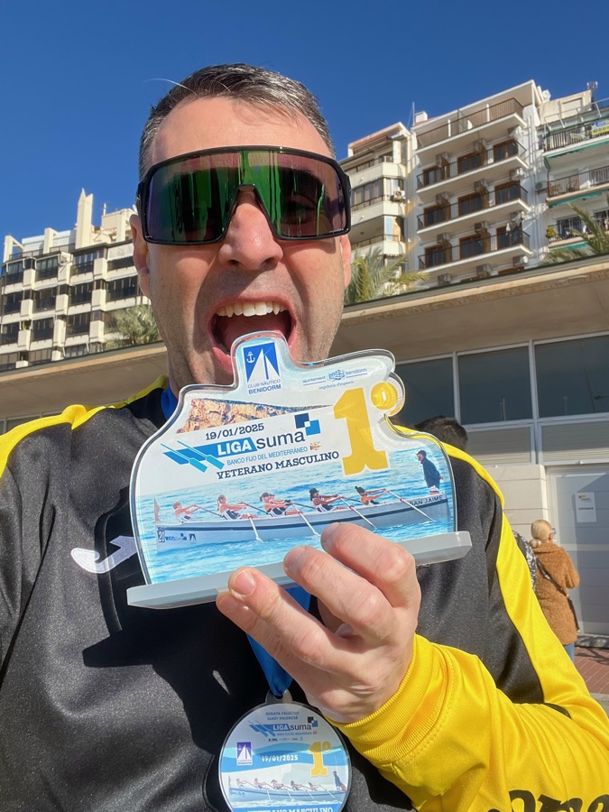

Professional profile
Research, collaboration and shared knowledge.
Xavier Barber · Full Professor of Statistics and Operations Research at Universidad Miguel Hernández de Elche.
A methodological foundation, many applications
My work at i-MInD combines Bayesian modelling, machine learning and efficiency analysis. I collaborate with specialists in health, ecology, environmental science, industry and economics on questions that need both domain knowledge and analytical rigour.
I completed my PhD at UMH in 2009, researching geostatistical models for bioclimatic indices under Javier Morales and Antonio López-Quílez. I hold statistics degrees from Universidad de Alicante and UMH.
Leadership & scientific community
- Deputy Director of i-MInD, Universidad Miguel Hernández de Elche.
- Chair of the International Biometric Society Representative Council and ex officio member of its Executive Board, 2026–2027.
- Member of the Executive Committee of the Spanish Society of Biostatistics.
- Head of the UMH–FISABIO Joint Research Unit on Statistical Methods in Health Sciences.
- Deputy Vice-Rector for Research at UMH, 2011–2023.
- Editorial and peer-review activity, including statistical editing for Public Health Nutrition.
International Biometric Society governance ↗
Research ethics & integrity
Since September 2026, biostatistical member of two committees at Universidad Miguel Hernández de Elche:
- Research Ethics and Integrity Committee (CEII).
- Animal Experimentation Ethics Committee (CEEA).
Beyond the university
I am from Dénia. Rowing, cycling with my grupetta and music are part of my life outside work.
